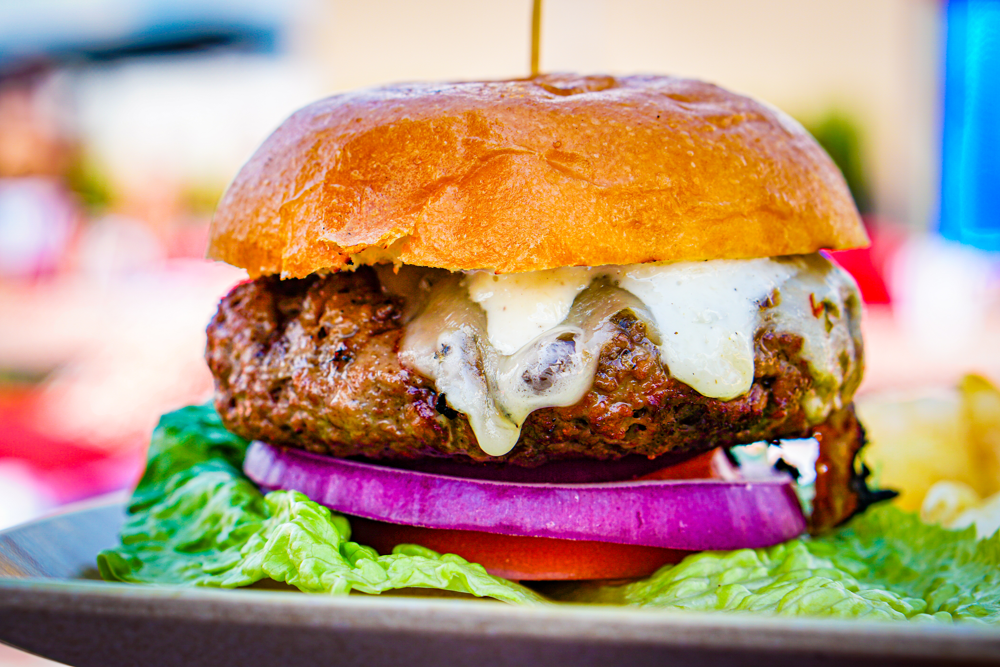

Burgers

Sour Cream Burgers
A rich and juicy cheeseburger topped with a creamy, tangy sour cream sauce. Packed with flavour and served on a
toasted bun, it’s a delicious twist on the classic homemade burger.
Ingredients
- 2 pounds ground beef
- 1 cup sour cream
- 1/2 cup dry bread crumbs
- 1 (1 ounce) envelope dry onion soup mix
- 1/8 teaspoon pepper
Directions
- Mix ground beef, sour cream, bread crumbs, onion soup mix, and pepper in a large bowl with your hands until
thoroughly combined. Cover and refrigerate until flavors have blended, about 15 minutes.
- Meanwhile, preheat an outdoor grill for medium heat and lightly oil the grate.
- Form beef mixture into eight patties.
- Cook on the preheated grill until no longer pink in the center, 6 to 8 minutes per side. An instant-read
thermometer inserted into the center should read at least 160 degrees F (70 degrees C) for medium.
Recipe added 22nd September 2026. Original recipes can be found here (opens in a new window).
Return to Homepage.